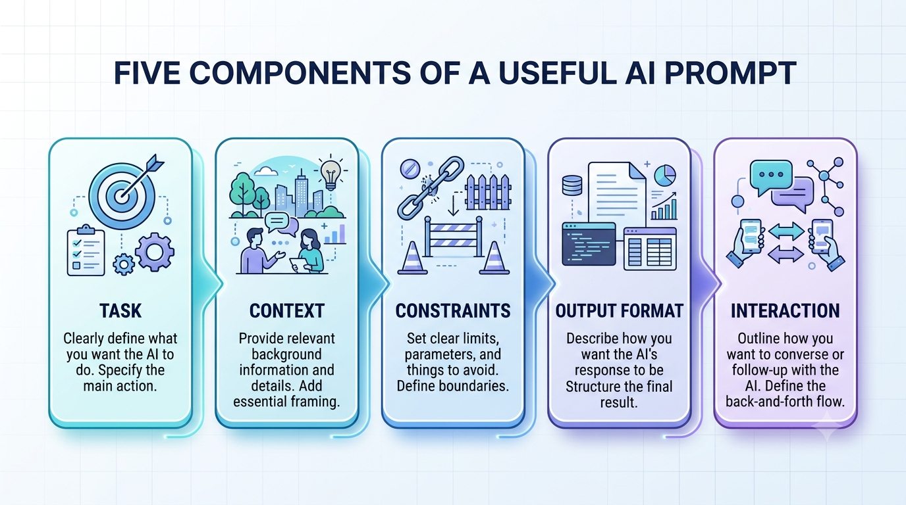
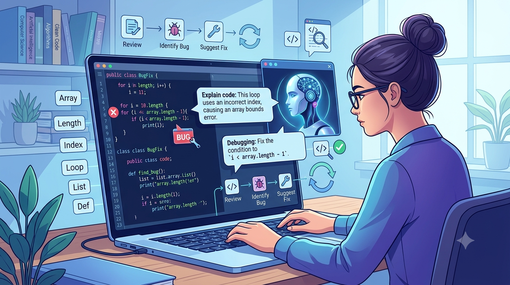

1. How to Use These AI Prompts
An AI prompt is an instruction or question you give to an AI assistant. A useful prompt explains your goal, relevant context, and the kind of response you want. The 60 templates below are designed for students; most can be used with general-purpose AI assistants, although results and available features vary by tool.
- Choose a prompt that matches your immediate task.
-
Replace placeholders such as
[TOPIC],[LEVEL], or[PASTE NOTES]with your own information. - Paste the completed prompt into your AI assistant.
- Review the answer, ask follow-up questions, and verify important details.
Tip: You do not have to use all 60. Save the five to ten prompts that solve problems you face repeatedly.
2. A Simple Formula for Better Prompts
Try combining task + context + constraints + output format + interaction. For example, instead of writing “Explain recursion,” ask: “Explain recursion to a first-year programming student. Use Java, trace a small factorial example, point out the base case, and then ask me one question before continuing.”
Be specific where it helps, but do not add unnecessary instructions. If you are working from a textbook, syllabus, or lecture PDF, supply the relevant material and tell the assistant whether it should use only that material. An AI model can still make mistakes even when the prompt is detailed.

3. Understand Difficult Concepts: 6 AI Prompts
1. Explain a concept simply
When to use it: Use when a textbook explanation feels too technical.
Act as a patient tutor. Explain [TOPIC] to a student at [LEVEL]. Start with a plain-language definition, give one everyday analogy, then a worked example. Finish with three questions to check my understanding.
2. Learn with examples
When to use it: Connect abstract ideas to real situations.
Teach me [TOPIC] using three examples: one everyday example, one example from [SUBJECT], and one common exam-style example. Explain why each example fits.
3. Find the prerequisite gaps
When to use it: Identify what to learn before tackling a hard chapter.
I am struggling with [TOPIC]. Ask me five short diagnostic questions, one at a time, to identify missing prerequisite knowledge. After my answers, recommend what to revise first.
4. Compare confusing concepts
When to use it: Useful for similar terms and exam questions.
Compare [CONCEPT A] and [CONCEPT B] for a [LEVEL] student. Give definitions, key differences, one example of each, and a situation where students commonly confuse them.
5. Learn step by step
When to use it: Avoid information overload.
Break [TOPIC] into five small lessons, ordered from basics to advanced. Teach lesson one only, then give me a quick practice question and wait for my response.
6. Use the Feynman technique
When to use it: Test whether you truly understand a concept.
Ask me to explain [TOPIC] in my own words. Identify any unclear or incorrect parts, explain only those parts simply, and ask me to try again. Do not give the full explanation before I attempt it.
4. Notes and Summaries: 6 AI Prompts
7. Summarize lecture notes
When to use it: Turn your own notes into revision material.
Using only the lecture notes I paste below, create a structured summary with definitions, main points, examples, and unclear sections. Do not add facts not present in the notes. Notes: [PASTE NOTES]
8. Convert notes into questions
When to use it: Study actively instead of rereading.
Convert the following [SUBJECT] notes into 12 active-recall questions, covering definitions, reasoning, and applications. Put the answers in a separate section. Notes: [PASTE NOTES]
9. Create a one-page revision sheet
When to use it: Prepare a quick revision reference.
Create a concise one-page revision sheet from the material below. Preserve key formulas, definitions, and exceptions. Mark any missing information rather than guessing. Material: [PASTE MATERIAL]
10. Organize messy notes
When to use it: Clean up notes taken during class.
Reorganize these rough notes into clear headings, bullet points, and examples without changing their meaning. Put uncertain or incomplete statements under “Needs verification.” Notes: [PASTE NOTES]
11. Build a glossary
When to use it: Learn terminology in a new subject.
From the text below, extract important technical terms. Create a glossary with each term, its meaning as stated in the text, and a short example when supported. Text: [PASTE TEXT]
12. Create flashcards
When to use it: Create reusable flashcards for spaced review.
Turn these notes into 15 flashcards in Question | Answer format. Make each card test one fact or idea. Avoid vague questions. Notes: [PASTE NOTES]
5. Exam Preparation and Revision: 6 AI Prompts
13. Make a revision plan
When to use it: Plan revision around your actual schedule.
I have a [SUBJECT] exam on [DATE]. Topics: [TOPICS]. Available study time: [HOURS PER DAY]. Create a realistic revision plan with learning, practice, and review. Ask for missing essentials before planning.
14. Generate practice questions
When to use it: Practice before the exam.
Using the syllabus or notes below, create 10 practice questions of mixed difficulty. Label each by topic and difficulty. Give answers separately after the questions. Source: [PASTE SYLLABUS OR NOTES]
15. Conduct an oral quiz
When to use it: Use AI as an interactive examiner.
Quiz me on [TOPIC] with 10 questions, one at a time. Wait for each answer, tell me what is correct or missing, and adapt the next question to my performance.
16. Review a past-paper answer
When to use it: Get feedback on your written answers.
Act as a fair examiner. Question: [QUESTION]. Marks: [MARKS]. My answer: [ANSWER]. Evaluate clarity, coverage, and accuracy against this rubric or reference: [RUBRIC]. Explain how to improve without inventing marking rules.
17. Prioritize weak topics
When to use it: Focus on areas needing attention.
Here are my topics and confidence scores from 1 to 5: [LIST]. I have [TIME] before my exam. Recommend a revision order, explain the trade-offs, and reserve time for practice and review.
18. Create a mock test
When to use it: Simulate exam conditions.
Create a [DURATION]-minute mock test for [SUBJECT] using these topics: [TOPICS]. Include a realistic mix of short and long questions and an answer key at the end. If I provide a pattern, follow it exactly: [PATTERN].
6. Programming and Debugging: 6 AI Prompts
19. Understand code line by line
When to use it: Understand code rather than memorize it.

Explain the following [LANGUAGE] code line by line. Describe inputs, outputs, control flow, and edge cases. Then trace it with a small example. Code: [PASTE CODE]
20. Get a debugging hint
When to use it: Solve bugs while learning.
I am debugging [LANGUAGE]. Expected behavior: [EXPECTED]. Actual behavior: [ACTUAL]. Error: [ERROR]. Code: [CODE]. Ask for missing details, identify likely causes, and give me hints before showing a full fix.
21. Practice DSA with hints
When to use it: Build independent problem-solving skills.
Give me a [DIFFICULTY] [DATA STRUCTURE OR ALGORITHM] problem. Do not reveal the solution immediately. Let me propose an approach, then give progressively stronger hints and discuss time and space complexity.
22. Review code quality
When to use it: Improve code you have already written.
Review my [LANGUAGE] code for correctness, readability, edge cases, and efficiency. Prioritize the three most important changes. Explain each change and avoid rewriting everything unless necessary. Code: [PASTE CODE]
23. Explain an error message
When to use it: Make unfamiliar errors less confusing.
Explain this [LANGUAGE OR FRAMEWORK] error in beginner-friendly terms: [ERROR MESSAGE]. Here is the relevant code and environment: [DETAILS]. Suggest how to reproduce, diagnose, and verify a fix.
24. Create test cases
When to use it: Test code beyond the happy path.
For this function or problem statement: [PASTE], suggest normal, boundary, invalid-input, and edge-case tests. Explain the expected output for each and identify any assumptions.
7. Assignments and Projects: 6 AI Prompts
25. Brainstorm project ideas
When to use it: Choose a project that fits your resources.
Suggest eight feasible [SUBJECT OR TECHNOLOGY] project ideas for a [YEAR OR SKILL LEVEL] student. Constraints: [TIME], [TEAM SIZE], [TOOLS], [BUDGET]. For each, include problem, core features, and a small first version.
26. Turn an idea into milestones
When to use it: Plan a manageable build.
My project idea is [IDEA]. Deadline: [DATE]. Team: [TEAM]. Break it into milestones with deliverables, dependencies, risks, and a minimum viable version. Flag assumptions.
27. Understand an assignment
When to use it: Interpret instructions before starting.
Here is my assignment question and rubric: [PASTE]. Explain what the question is asking, identify required deliverables, and create an outline. Do not write a final submission yet.
28. Design a project architecture
When to use it: Avoid overengineering a student project.
I want to build [PROJECT] using [STACK]. Propose a simple architecture with components, data flow, database needs, and major trade-offs. Start with the simplest workable version.
29. Improve a project report
When to use it: Polish a report responsibly.
Review this project report draft: [PASTE]. Identify unclear explanations, unsupported claims, missing methodology, and formatting problems. Suggest edits while preserving my original work.
30. Prepare for a project viva
When to use it: Practice explaining your own project.
Act as a project evaluator for [PROJECT]. Ask me one viva question at a time about the problem, design choices, implementation, testing, and limitations. Give feedback after each response.
8. Research and Presentations: 6 AI Prompts
31. Build a research plan
When to use it: Start research with clear questions.
I need to research [TOPIC] for [PURPOSE]. Create a research plan with key questions, useful source types, search phrases, and a checklist for evaluating source credibility.
32. Evaluate a source
When to use it: Assess whether a source is worth using.
Evaluate the credibility and relevance of this source for my question [QUESTION]: [PASTE LINK OR TEXT]. Distinguish what you can verify from what needs checking. Do not invent publication details.
33. Compare evidence
When to use it: Analyze competing explanations.
Compare the claims in Source A: [TEXT A] and Source B: [TEXT B]. Identify agreements, disagreements, evidence quality, and unanswered questions. Cite only the material I provide.
34. Create a presentation outline
When to use it: Plan a presentation before designing slides.
Create an [NUMBER]-slide presentation outline on [TOPIC] for [AUDIENCE]. Give each slide a clear message, 2–4 supporting points, and a suggestion for an appropriate visual.
35. Simplify a technical paper
When to use it: Read difficult academic material.
Explain the following abstract or paper excerpt to a [LEVEL] student. Separate the research question, method, findings, limitations, and terms I should learn. Text: [PASTE TEXT]
36. Prepare for audience questions
When to use it: Practice Q&A before presenting.
I am presenting [TOPIC] to [AUDIENCE]. Generate 12 likely audience questions, including critical questions, and help me prepare concise evidence-based answers. Mark where I need a source.
9. Productivity and Time Management: 6 AI Prompts
37. Build a realistic study timetable
When to use it: Create a plan you can actually follow.
Create a weekly study timetable using my fixed commitments: [SCHEDULE], subjects: [SUBJECTS], deadlines: [DATES], and available energy: [PREFERENCES]. Include breaks and buffer time.
38. Break down a big task
When to use it: Make a large task approachable.
I keep postponing [TASK]. Break it into actions of 10–25 minutes, identify the first action I can do today, and suggest a simple progress tracker.
39. Prioritize today’s work
When to use it: Avoid treating every task as urgent.
Here are my tasks with deadlines and estimated durations: [LIST]. Help me select the three highest-priority tasks for today and explain what can wait.
40. Plan a focused study session
When to use it: Make short study blocks effective.
I have [MINUTES] to study [TOPIC]. Create a focused session with a specific goal, active practice, a short break if appropriate, and a final self-test.
41. Review a productive week
When to use it: Improve your routine using evidence.
Ask me five questions about what I completed, what distracted me, and what felt difficult this week. Then help me choose two realistic improvements for next week.
42. Catch up after falling behind
When to use it: Recover without creating an impossible schedule.
I am behind in [SUBJECTS OR TASKS] by [AMOUNT]. My next deadlines are [DATES]. Help me make a recovery plan that prioritizes essentials and avoids unrealistic all-night sessions.
10. Resume and Interview Preparation: 6 AI Prompts
43. Improve resume bullets
When to use it: Describe real work more effectively.
Rewrite these resume bullets to be clearer and more specific without inventing results, tools, or metrics: [BULLETS]. Ask me for missing details that would strengthen them.
44. Prepare for a technical interview
When to use it: Practice interviews interactively.
Act as an interviewer for a [ROLE] internship. Ask one question at a time at [LEVEL], evaluate my answer, and give constructive feedback before the next question.
45. Analyze a job description
When to use it: Understand what a role requires.
Here is a job or internship description: [PASTE]. Identify required skills, preferred skills, likely interview topics, and a preparation plan based on my current skills: [SKILLS].
46. Write a truthful project description
When to use it: Present project work accurately.
Help me write a concise resume description of [PROJECT]. My actual contributions were [CONTRIBUTIONS], tools used [TOOLS], and results [RESULTS]. Do not add unsupported achievements.
47. Prepare a self-introduction
When to use it: Practice a confident introduction.
Help me create a 45-second self-introduction for a [ROLE] interview. Background: [EDUCATION], skills: [SKILLS], projects: [PROJECTS], goal: [GOAL]. Keep it natural and specific.
48. Create a skill-gap roadmap
When to use it: Plan career learning around available time.
My target role is [ROLE]. Current skills: [SKILLS]. Available weekly time: [HOURS]. Make a 12-week learning roadmap with hands-on exercises and portfolio checkpoints.
11. Learning New Skills: 6 AI Prompts
49. Create a beginner roadmap
When to use it: Start a new skill without random tutorials.
I want to learn [SKILL] from scratch. I can spend [HOURS] per week for [WEEKS]. Create a progressive roadmap with prerequisites, practice tasks, and measurable milestones.
50. Design deliberate practice
When to use it: Target a specific weakness.
I know the basics of [SKILL] but struggle with [WEAKNESS]. Design five practice exercises that gradually increase in difficulty, with criteria for judging improvement.
51. Choose a learning resource
When to use it: Choose resources based on needs.
Help me choose a learning resource for [SKILL]. My level: [LEVEL]. Budget: [BUDGET]. Preferred format: [FORMAT]. Explain selection criteria and what details need current verification.
52. Create a mini challenge
When to use it: Build consistency with manageable tasks.
Design a seven-day mini challenge to practice [SKILL] for [MINUTES] per day. Each day should produce a small tangible result and build on the previous day.
53. Test readiness to advance
When to use it: Check whether you are ready for harder material.
Create a practical assessment for [SKILL] at [LEVEL]. Include tasks, a scoring rubric, and the skills each task checks. Do not provide solutions until I submit my attempt.
54. Connect theory to a project
When to use it: Turn learning into proof of skill.
I recently learned [CONCEPTS]. Suggest three small projects that apply them, explain what each project demonstrates, and identify the easiest one to complete in [TIME].
12. Advanced Prompting Techniques: 6 AI Prompts
55. Ask clarifying questions first
When to use it: Use when your request has missing context.
I want help with [GOAL]. Before proposing a solution, ask up to five essential clarifying questions one at a time. State any assumptions that remain after I answer.
56. Request structured output
When to use it: Get a format you can reuse.
Help me with [TASK]. Return a table with columns [COLUMNS]. Keep each row concise, mark unknown values as “Not verified,” and add a brief explanation of your selection criteria.
57. Use a supplied reference only
When to use it: Keep an answer grounded in your material.
Answer [QUESTION] using only the source text below. Quote definitions exactly when present. If the answer is not supported, say “Not found in the provided source.” Source: [PASTE TEXT]
58. Critique before rewriting
When to use it: Improve writing without losing your voice.
Here is my draft: [PASTE]. First identify its three biggest weaknesses and explain why they matter. Then suggest targeted improvements. Preserve my tone and do not introduce new factual claims.
59. Compare options with criteria
When to use it: Make decisions transparently.
Compare [OPTION A], [OPTION B], and [OPTION C] for [GOAL] using these weighted criteria: [CRITERIA]. Show assumptions, trade-offs, and what additional information could change the recommendation.
60. Build an iterative feedback loop
When to use it: Use AI as a coach, not an answer machine.
Help me improve [WORK]. Ask me to share my first attempt, assess it against [CRITERIA], give only the top three improvements, and repeat after I revise.
13. How to Customize a Prompt for Better Results
A template is a starting point. Improve it by adding details the assistant cannot know automatically:
- Your level: beginner, intermediate, final-year student, or a specific course level.
- Your source: lecture notes, syllabus, textbook excerpt, code, or assignment rubric.
- Your constraint: time available, programming language, word count, or exam pattern.
- Your preferred response: short explanation, worked example, table, questions, or step-by-step hints.
- Your next action: “Wait for my answer,” “Ask me one question,” or “Show where you are uncertain.”
Example: Replace “Help me study DBMS” with “I have 40 minutes to revise SQL joins for a college test. Explain INNER JOIN and LEFT JOIN using two small tables, give three practice queries, and wait for my answers before showing solutions.”
14. Use AI Responsibly and Check Its Answers
AI is useful as a tutor, brainstorming partner, and feedback tool. It is not a guaranteed source of truth. Verify formulas, citations, statistics, legal or medical information, and technical claims using reliable references. For exams, compare definitions and procedures with your prescribed course material.
- Learn, do not simply submit: use prompts to understand an assignment, plan an answer, or get feedback. Follow your institution's rules about AI assistance and attribution.
- Protect private information: avoid sharing passwords, API keys, confidential records, classmates' personal data, or unpublished restricted material.
- Check citations: ask for sources if helpful, then open and verify them yourself; AI-generated references may be incorrect or nonexistent.
- Test generated code: run it, inspect edge cases, and understand what each part does before using it.
- Stay in control: treat the output as a draft or explanation you can question, revise, and challenge.
15. Common Prompting Mistakes to Avoid
- Being too vague: “Teach me coding” gives less direction than a named language, topic, level, and goal.
- Giving no source context: if an answer must match a particular syllabus, paste the relevant material.
- Requesting everything at once: for difficult topics, ask for one lesson or question at a time.
- Copying without verification: fluent text can still contain wrong facts, fabricated citations, or broken code.
- Asking AI to invent achievements: keep resumes, reports, and project descriptions faithful to what you actually did.
- Ignoring follow-ups: ask “Why?”, “Show another example,” or “What assumptions did you make?” when the first answer is insufficient.
16. Frequently Asked Questions
What are AI prompts for students?
They are instructions students give to AI assistants for tasks such as explaining topics, generating practice questions, reviewing code, organizing notes, or planning study sessions.
Do these prompts work with ChatGPT and other AI assistants?
Most prompts are written in general language and can be tried with multiple text-based AI assistants. Results differ depending on the model, its features, your input, and the context available.
Are longer prompts always better?
No. A clear, short prompt can work well. Add detail when it changes the task, supplies necessary context, or specifies an important constraint.
Can I use AI prompts for exam preparation?
Yes, for revision plans, quizzes, practice questions, and explanations. Check generated answers against your syllabus and reliable course materials.
Can AI prompts help with programming?
They can help explain code, suggest debugging steps, review solutions, and design tests. You should still run the code, verify behavior, and understand the solution yourself.
Should I copy AI-generated assignment answers?
Use AI according to your institution's academic integrity rules. It is safer and more educational to use it for understanding, planning, feedback, and checking your own work rather than submitting unverified generated answers as your own.
What should I do when the AI gives a wrong answer?
Check the claim against a trusted source, provide the relevant reference or counterexample, and ask the AI to reassess its reasoning. Do not assume a confident answer is correct.
17. Final Thoughts
The best AI prompts for students are not magic commands. They help you communicate a clear learning goal, provide the right context, and request useful feedback. Start with a few prompts that match your real needs, customize them, and keep improving your questions.
Use AI to practise thinking—not to avoid it. For a complete learning workflow, read The Perfect AI Study System. Explore free AI websites for students, build an organized knowledge base with Your Digital Brain, or apply the coding prompts to our Java projects guide and GitHub project ideas.